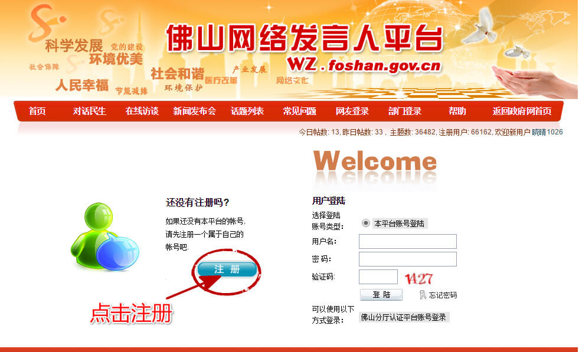
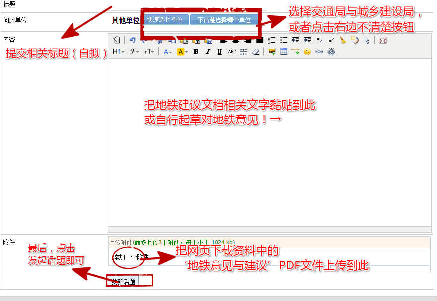

万人请愿活动！佛山地铁11号线碧江站-新手指引
一、活动背景：
佛山11号地铁现规划中，但线路规划不合理。北滘镇碧江、坤州、三桂和顺德碧桂园区域，众多民众密集居住点迫切需要地铁解决出行难，广州地铁7号线西延遗忘这里，佛山地铁11号准备绕开这里。请加入万人请愿行动，让相关部门看到我们的诉求，把地铁还给真正需要的人！让我们共同参与解决自己出行难问题！
二、参与方式：
- 让更多人知道这一活动，呼吁身边邻居及亲朋好友关注并参与这一活动！(小编呼吁各位动动手指头分享这一页面)
- 用你现在的5分钟，解决你未来出行难！请把我们共同的请愿与诉求提交至政府相关部门,具体资料与操作方式见以下新手指引
- 持续关注并支持这一活动，如后续的万人请愿书签名及新闻媒体的跟踪报道。
三、新手指引
1、把我们对于地铁的意见与建议提交到以下5个渠道。→相关资料（按钮点击跳转并新页面打开）
- 顺德规划局网上留言：http://sg.shunde.gov.cn/page.php?Sid=5&Tid=3
- 北滘镇长邮箱：http://www.beijiao.gov.cn/new/page.php?Aid=6&Bid=8
- 顺德政务咨询和行政投诉平台：http://22838180.shunde.gov.cn/Complain.aspx
- 顺德网上信访：http://xfj.shunde.gov.cn/page.php?Sid=14
- 佛山网络发言人平台：http://wz.foshan.gov.cn/
2、上述前4个网站直接可以提交建议，对于最后一个较为复杂的佛山网络发言人平台教程如下：
·步骤1：进入网站(http://wz.foshan.gov.cn/)点击下图所示区域

·步骤2，提示进行登录或者注册页面，新用户点击注册按钮，跳入注册页

·步骤3，注册成功后，点击下图方框位置跳转进入登录页面，登录成功后跳转回到首页点击问政区域，进入发布页面。

·步骤4，按照下图提示，发表地铁意见，并上传相关文件，最后点击发布话题按钮。

PS：如提示发布失败，请修改部分内容或标题，内容与已发布话题相似将不能发布。
3、请发掘身边所有媒体爆料渠道（网站、微信、博客、论坛等）把我们对佛山地铁11号线的意见与建议以及我们的万人请愿活动爆料出去，让更多人关注。
四、相关资料下载
- 地铁意见与建议(PDF)0.94MB
- 地铁意见与建议(Word)1.89MB
- 地铁规划请愿书(Word)15KB
- 话题发布内容参考(可修改后复制)
五、我参与，我支持佛山地铁11号线设置碧江站
支持人数，支持按钮
六、活动动态
最新任务
最新情况